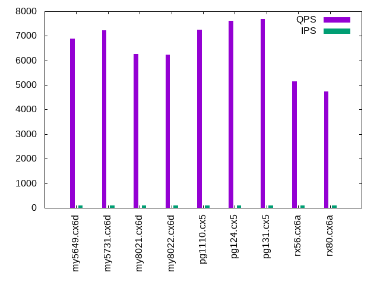

This is a report for the insert benchmark with 20M docs and 1 client(s). It is generated by scripts (bash, awk, sed) and Tufte might not be impressed. An overview of the insert benchmark is here and a short update is here. Below, by DBMS, I mean DBMS+version.config. An example is my8020.c10b40 where my means MySQL, 8020 is version 8.0.20 and c10b40 is the name for the configuration file.
The test server is an Intel NUC. Clients and the DBMS share one server.
The tested DBMS are:
The numbers are inserts/s for l.i0 and l.i1, indexed docs (or rows) /s for l.x and queries/s for q*.2. The values are the average rate over the entire test for inserts (IPS) and queries (QPS). The range of values for IPS and QPS is split into 3 parts: bottom 25%, middle 50%, top 25%. Values in the bottom 25% have a red background, values in the top 25% have a green background and values in the middle have no color. A gray background is used for values that can be ignored because the DBMS did not sustain the target insert rate. Red backgrounds are not used when the minimum value is within 80% of the max value.
| dbms | l.i0 | l.x | l.i1 | q100.2 | q200.2 | q400.2 | q600.2 | q800.2 | q1000.2 |
|---|---|---|---|---|---|---|---|---|---|
| my5649.cx6d | 139860 | 107487 | 42373 | 6886 | 6938 | 7470 | 7673 | 6961 | 7227 |
| my5731.cx6d | 126582 | 160800 | 38610 | 7238 | 7210 | 7185 | 7175 | 7060 | 7098 |
| my8021.cx6d | 84388 | 155814 | 28490 | 6260 | 6205 | 6235 | 6220 | 6200 | 6157 |
| my8022.cx6d | 85106 | 152273 | 28902 | 6231 | 6208 | 6209 | 6172 | 6132 | 6046 |
| pg1110.cx5 | 103093 | 300000 | 40733 | 7261 | 7278 | 7260 | 7258 | 7229 | 7231 |
| pg124.cx5 | 103093 | 295588 | 39216 | 7611 | 7616 | 7596 | 7626 | 7628 | 7634 |
| pg131.cx5 | 105820 | 300000 | 39062 | 7680 | 7738 | 7733 | 7655 | 7682 | 7744 |
| rx56.cx6a | 103093 | 114857 | 43290 | 5149 | 5123 | 5140 | 5104 | 5086 | 5071 |
| rx80.cx6a | 81967 | 108064 | 36364 | 4743 | 4715 | 4721 | 4690 | 4700 | 4667 |
This lists the average rate of inserts/s for the tests that do inserts concurrent with queries. For such tests the query rate is listed in the table above. The read+write tests are setup so that the insert rate should match the target rate every second. Cells that are not at least 95% of the target have a red background to indicate a failure to satisfy the target.
| dbms | q100.2 | q200.2 | q400.2 | q600.2 | q800.2 | q1000.2 |
|---|---|---|---|---|---|---|
| my5649.cx6d | 100 | 200 | 400 | 599 | 799 | 998 |
| my5731.cx6d | 100 | 200 | 399 | 599 | 799 | 998 |
| my8021.cx6d | 100 | 200 | 399 | 599 | 799 | 998 |
| my8022.cx6d | 100 | 200 | 399 | 599 | 799 | 998 |
| pg1110.cx5 | 100 | 200 | 399 | 599 | 799 | 998 |
| pg124.cx5 | 100 | 200 | 399 | 599 | 799 | 998 |
| pg131.cx5 | 100 | 200 | 399 | 599 | 799 | 999 |
| rx56.cx6a | 100 | 200 | 399 | 599 | 799 | 998 |
| rx80.cx6a | 100 | 200 | 399 | 599 | 799 | 998 |
| target | 100 | 200 | 400 | 600 | 800 | 1000 |
l.i0: load without secondary indexes. Graphs for performance per 1-second interval are here.
Average throughput:
Insert response time histogram: each cell has the percentage of responses that take <= the time in the header and max is the max response time in seconds. For the max column values in the top 25% of the range have a red background and in the bottom 25% of the range have a green background. The red background is not used when the min value is within 80% of the max value.
| dbms | 256us | 1ms | 4ms | 16ms | 64ms | 256ms | 1s | 4s | 16s | gt | max |
|---|---|---|---|---|---|---|---|---|---|---|---|
| my5649.cx6d | 99.037 | 0.867 | 0.085 | 0.007 | 0.003 | 0.001 | 0.265 | ||||
| my5731.cx6d | 98.832 | 0.904 | 0.259 | 0.002 | 0.003 | 0.107 | |||||
| my8021.cx6d | 0.001 | 99.602 | 0.357 | 0.038 | 0.002 | 0.106 | |||||
| my8022.cx6d | 99.703 | 0.188 | 0.108 | 0.002 | 0.118 | ||||||
| pg1110.cx5 | 95.257 | 4.743 | 0.001 | 0.005 | |||||||
| pg124.cx5 | 95.678 | 4.322 | 0.003 | ||||||||
| pg131.cx5 | 97.982 | 2.017 | 0.001 | 0.004 | |||||||
| rx56.cx6a | 79.607 | 20.340 | 0.049 | 0.003 | 0.103 | ||||||
| rx80.cx6a | 0.012 | 99.826 | 0.143 | 0.018 | 0.001 | 0.118 |
Performance metrics for the DBMS listed above. Some are normalized by throughput, others are not. Legend for results is here.
ips qps rps rmbps wps wmbps rpq rkbpq wpi wkbpi csps cpups cspq cpupq dbgb1 dbgb2 rss maxop p50 p99 tag 139860 0 1238 4.8 51.3 32.2 0.009 0.035 0.000 0.236 15177 45.7 0.109 13 1.3 41.8 2.0 0.265 143193 18274 my5649.cx6d 126582 0 0 0.0 164.3 32.1 0.000 0.000 0.001 0.259 13041 45.4 0.103 14 1.3 41.8 2.3 0.107 128609 106054 my5731.cx6d 84388 0 0 0.0 117.0 22.2 0.000 0.000 0.001 0.270 18355 40.4 0.218 19 1.3 41.9 2.5 0.106 85509 50087 my8021.cx6d 85106 0 0 0.0 120.6 22.3 0.000 0.000 0.001 0.269 15506 40.7 0.182 19 1.3 41.9 2.5 0.118 85860 26992 my8022.cx6d 103093 0 0 0.0 73.3 43.2 0.000 0.000 0.001 0.429 12591 42.0 0.122 16 1.9 5.2 0.0 0.005 103490 82210 pg1110.cx5 103093 0 0 0.0 68.4 43.4 0.000 0.000 0.001 0.431 12659 42.3 0.123 16 1.9 5.2 0.0 0.003 103690 94216 pg124.cx5 105820 0 0 0.0 70.7 44.4 0.000 0.000 0.001 0.429 12878 42.8 0.122 16 1.9 5.2 0.0 0.004 106684 101415 pg131.cx5 103093 0 0 0.0 38.3 15.4 0.000 0.000 0.000 0.153 10495 45.5 0.102 18 1.0 2.0 1.1 0.103 101988 83911 rx56.cx6a 81967 0 0 0.0 35.4 12.3 0.000 0.000 0.000 0.153 8420 41.8 0.103 20 1.0 2.2 1.5 0.118 81110 71656 rx80.cx6a
l.x: create secondary indexes.
Average throughput:
Performance metrics for the DBMS listed above. Some are normalized by throughput, others are not. Legend for results is here.
ips qps rps rmbps wps wmbps rpq rkbpq wpi wkbpi csps cpups cspq cpupq dbgb1 dbgb2 rss maxop p50 p99 tag 107487 0 115 48.9 1238.7 112.1 0.001 0.465 0.012 1.068 4056 21.2 0.038 8 2.7 43.2 3.5 0.023 NA NA my5649.cx6d 160800 0 108 56.9 2031.9 146.8 0.001 0.362 0.013 0.935 10918 23.7 0.068 6 3.0 43.5 3.7 0.012 NA NA my5731.cx6d 155814 0 0 0.0 1384.1 125.9 0.000 0.000 0.009 0.827 9111 24.4 0.058 6 3.0 43.5 3.0 0.022 NA NA my8021.cx6d 152273 0 0 0.0 1507.1 123.6 0.000 0.000 0.010 0.831 8919 24.2 0.059 6 3.0 43.5 3.0 0.017 NA NA my8022.cx6d 300000 0 0 0.0 60.5 64.8 0.000 0.000 0.000 0.221 2027 23.6 0.007 3 3.7 8.6 0.0 0.002 NA NA pg1110.cx5 295588 0 0 0.0 57.4 60.7 0.000 0.000 0.000 0.210 1937 23.7 0.007 3 3.7 8.6 0.0 0.002 NA NA pg124.cx5 300000 0 0 0.0 65.3 66.7 0.000 0.000 0.000 0.228 2020 23.6 0.007 3 3.7 8.6 0.0 0.003 NA NA pg131.cx5 114857 0 0 0.0 41.2 20.9 0.000 0.000 0.000 0.186 819 24.5 0.007 9 2.3 3.3 2.2 0.009 NA NA rx56.cx6a 108064 0 0 0.0 33.3 19.7 0.000 0.000 0.000 0.187 923 24.7 0.009 9 2.3 3.5 2.6 0.008 NA NA rx80.cx6a
l.i1: continue load after secondary indexes created. Graphs for performance per 1-second interval are here.
Average throughput:
Insert response time histogram: each cell has the percentage of responses that take <= the time in the header and max is the max response time in seconds. For the max column values in the top 25% of the range have a red background and in the bottom 25% of the range have a green background. The red background is not used when the min value is within 80% of the max value.
| dbms | 256us | 1ms | 4ms | 16ms | 64ms | 256ms | 1s | 4s | 16s | gt | max |
|---|---|---|---|---|---|---|---|---|---|---|---|
| my5649.cx6d | 29.170 | 69.875 | 0.819 | 0.130 | 0.005 | nonzero | 0.280 | ||||
| my5731.cx6d | 99.200 | 0.676 | 0.122 | 0.002 | 0.092 | ||||||
| my8021.cx6d | 99.167 | 0.683 | 0.110 | 0.040 | 0.103 | ||||||
| my8022.cx6d | 99.296 | 0.451 | 0.212 | 0.042 | 0.128 | ||||||
| pg1110.cx5 | 99.972 | 0.025 | 0.003 | 0.029 | |||||||
| pg124.cx5 | 99.981 | 0.017 | 0.003 | 0.050 | |||||||
| pg131.cx5 | 99.850 | 0.123 | 0.024 | 0.003 | 0.242 | ||||||
| rx56.cx6a | 7.865 | 92.041 | 0.091 | 0.003 | 0.001 | 0.070 | |||||
| rx80.cx6a | 0.088 | 99.757 | 0.140 | 0.015 | 0.053 |
Performance metrics for the DBMS listed above. Some are normalized by throughput, others are not. Legend for results is here.
ips qps rps rmbps wps wmbps rpq rkbpq wpi wkbpi csps cpups cspq cpupq dbgb1 dbgb2 rss maxop p50 p99 tag 42373 0 742 2.9 85.5 26.7 0.018 0.070 0.002 0.646 9777 33.3 0.231 31 7.9 48.4 7.9 0.280 44401 5796 my5649.cx6d 38610 0 0 0.0 779.1 45.0 0.000 0.000 0.020 1.194 10088 34.3 0.261 36 7.9 48.4 8.2 0.092 40755 2497 my5731.cx6d 28490 0 132 2.1 137.4 19.6 0.005 0.074 0.005 0.705 14518 33.3 0.510 47 7.9 48.4 8.3 0.103 30316 600 my8021.cx6d 28902 0 134 2.1 141.9 19.9 0.005 0.074 0.005 0.706 12112 34.2 0.419 47 7.9 48.4 8.3 0.128 30867 550 my8022.cx6d 40733 0 0 0.0 215.3 71.8 0.000 0.000 0.005 1.805 10519 35.7 0.258 35 8.3 20.3 0.0 0.029 41205 27181 pg1110.cx5 39216 0 0 0.0 206.5 67.5 0.000 0.000 0.005 1.762 10276 35.7 0.262 36 8.2 19.7 0.0 0.050 40306 26434 pg124.cx5 39062 0 0 0.0 203.7 68.2 0.000 0.000 0.005 1.789 9986 35.7 0.256 37 8.2 19.9 0.0 0.242 40470 11037 pg131.cx5 43290 0 9 1.2 65.0 42.7 0.000 0.028 0.002 1.010 9451 48.8 0.218 45 4.9 8.5 3.0 0.070 42705 37160 rx56.cx6a 36364 0 7 0.8 56.9 36.1 0.000 0.024 0.002 1.016 8120 45.7 0.223 50 4.9 8.7 3.4 0.053 36175 32314 rx80.cx6a
q100.2: range queries with 100 insert/s per client, 2nd loop. Graphs for performance per 1-second interval are here.
Average throughput:
Query response time histogram: each cell has the percentage of responses that take <= the time in the header and max is the max response time in seconds. For max values in the top 25% of the range have a red background and in the bottom 25% of the range have a green background. The red background is not used when the min value is within 80% of the max value.
| dbms | 256us | 1ms | 4ms | 16ms | 64ms | 256ms | 1s | 4s | 16s | gt | max |
|---|---|---|---|---|---|---|---|---|---|---|---|
| my5649.cx6d | 90.945 | 9.052 | 0.002 | 0.002 | nonzero | 0.017 | |||||
| my5731.cx6d | 99.892 | 0.108 | nonzero | nonzero | nonzero | 0.019 | |||||
| my8021.cx6d | 99.272 | 0.728 | nonzero | nonzero | nonzero | 0.018 | |||||
| my8022.cx6d | 99.383 | 0.617 | nonzero | nonzero | nonzero | 0.024 | |||||
| pg1110.cx5 | 99.912 | 0.087 | 0.001 | 0.003 | |||||||
| pg124.cx5 | 99.963 | 0.037 | 0.001 | 0.002 | |||||||
| pg131.cx5 | 99.963 | 0.036 | 0.001 | nonzero | 0.007 | ||||||
| rx56.cx6a | 97.516 | 2.484 | nonzero | 0.002 | |||||||
| rx80.cx6a | 97.900 | 2.100 | nonzero | 0.002 |
Insert response time histogram: each cell has the percentage of responses that take <= the time in the header and max is the max response time in seconds. For max values in the top 25% of the range have a red background and in the bottom 25% of the range have a green background. The red background is not used when the min value is within 80% of the max value.
| dbms | 256us | 1ms | 4ms | 16ms | 64ms | 256ms | 1s | 4s | 16s | gt | max |
|---|---|---|---|---|---|---|---|---|---|---|---|
| my5649.cx6d | 0.111 | 53.111 | 39.639 | 7.139 | 0.021 | ||||||
| my5731.cx6d | 99.250 | 0.444 | 0.306 | 0.023 | |||||||
| my8021.cx6d | 98.667 | 1.167 | 0.167 | 0.023 | |||||||
| my8022.cx6d | 98.167 | 1.667 | 0.167 | 0.028 | |||||||
| pg1110.cx5 | 99.944 | 0.056 | 0.006 | ||||||||
| pg124.cx5 | 99.944 | 0.056 | 0.006 | ||||||||
| pg131.cx5 | 99.972 | 0.028 | 0.006 | ||||||||
| rx56.cx6a | 100.000 | 0.004 | |||||||||
| rx80.cx6a | 99.917 | 0.083 | 0.004 |
Performance metrics for the DBMS listed above. Some are normalized by throughput, others are not. Legend for results is here.
ips qps rps rmbps wps wmbps rpq rkbpq wpi wkbpi csps cpups cspq cpupq dbgb1 dbgb2 rss maxop p50 p99 tag 100 6886 2 0.0 2.5 0.1 0.000 0.001 0.025 1.058 26428 25.8 3.838 150 8.1 48.6 8.0 0.017 8439 2541 my5649.cx6d 100 7238 0 0.0 6.0 0.2 0.000 0.000 0.061 1.884 27789 27.0 3.839 149 8.1 48.6 8.3 0.019 7240 7144 my5731.cx6d 100 6260 0 0.0 45.3 1.1 0.000 0.000 0.454 11.069 24782 29.2 3.958 187 8.1 48.6 8.5 0.018 6265 6105 my8021.cx6d 100 6231 0 0.0 41.0 1.0 0.000 0.000 0.411 10.351 24303 27.6 3.900 177 8.1 48.6 8.5 0.024 6233 6105 my8022.cx6d 100 7261 0 0.0 212.4 3.9 0.000 0.000 2.128 39.734 27963 27.6 3.851 152 8.4 14.5 0.0 0.003 7272 7128 pg1110.cx5 100 7611 0 0.0 209.4 3.9 0.000 0.000 2.098 39.557 29298 27.6 3.849 145 8.2 14.2 0.0 0.002 7624 7496 pg124.cx5 100 7680 0 0.0 210.0 3.9 0.000 0.000 2.104 39.547 29564 27.6 3.850 144 8.2 13.8 0.0 0.007 7687 7544 pg131.cx5 100 5149 0 0.0 3.1 0.0 0.000 0.000 0.031 0.247 19770 25.9 3.839 201 4.6 8.3 4.3 0.002 5148 5066 rx56.cx6a 100 4743 0 0.0 3.1 0.0 0.000 0.000 0.031 0.251 18354 26.8 3.870 226 4.6 8.4 4.8 0.002 4747 4683 rx80.cx6a
q200.2: range queries with 200 insert/s per client, 2nd loop. Graphs for performance per 1-second interval are here.
Average throughput:
Query response time histogram: each cell has the percentage of responses that take <= the time in the header and max is the max response time in seconds. For max values in the top 25% of the range have a red background and in the bottom 25% of the range have a green background. The red background is not used when the min value is within 80% of the max value.
| dbms | 256us | 1ms | 4ms | 16ms | 64ms | 256ms | 1s | 4s | 16s | gt | max |
|---|---|---|---|---|---|---|---|---|---|---|---|
| my5649.cx6d | 91.279 | 8.716 | 0.002 | 0.003 | nonzero | 0.017 | |||||
| my5731.cx6d | 99.876 | 0.124 | nonzero | nonzero | nonzero | 0.020 | |||||
| my8021.cx6d | 99.302 | 0.697 | nonzero | nonzero | 0.015 | ||||||
| my8022.cx6d | 99.389 | 0.610 | 0.001 | nonzero | nonzero | 0.020 | |||||
| pg1110.cx5 | 99.913 | 0.085 | 0.002 | 0.002 | |||||||
| pg124.cx5 | 99.965 | 0.034 | 0.002 | 0.004 | |||||||
| pg131.cx5 | 99.967 | 0.031 | 0.002 | 0.003 | |||||||
| rx56.cx6a | 97.333 | 2.667 | nonzero | nonzero | 0.010 | ||||||
| rx80.cx6a | 97.878 | 2.121 | nonzero | 0.003 |
Insert response time histogram: each cell has the percentage of responses that take <= the time in the header and max is the max response time in seconds. For max values in the top 25% of the range have a red background and in the bottom 25% of the range have a green background. The red background is not used when the min value is within 80% of the max value.
| dbms | 256us | 1ms | 4ms | 16ms | 64ms | 256ms | 1s | 4s | 16s | gt | max |
|---|---|---|---|---|---|---|---|---|---|---|---|
| my5649.cx6d | 0.278 | 75.903 | 20.708 | 3.111 | 0.021 | ||||||
| my5731.cx6d | 99.417 | 0.389 | 0.194 | 0.022 | |||||||
| my8021.cx6d | 99.181 | 0.694 | 0.125 | 0.023 | |||||||
| my8022.cx6d | 97.486 | 2.389 | 0.125 | 0.029 | |||||||
| pg1110.cx5 | 99.972 | 0.028 | 0.006 | ||||||||
| pg124.cx5 | 99.986 | 0.014 | 0.006 | ||||||||
| pg131.cx5 | 99.986 | 0.014 | 0.006 | ||||||||
| rx56.cx6a | 3.472 | 96.500 | 0.028 | 0.004 | |||||||
| rx80.cx6a | 0.014 | 99.931 | 0.056 | 0.011 |
Performance metrics for the DBMS listed above. Some are normalized by throughput, others are not. Legend for results is here.
ips qps rps rmbps wps wmbps rpq rkbpq wpi wkbpi csps cpups cspq cpupq dbgb1 dbgb2 rss maxop p50 p99 tag 200 6938 4 0.0 2.6 0.2 0.001 0.002 0.013 0.880 26617 25.9 3.837 149 8.4 48.9 8.3 0.017 8455 2685 my5649.cx6d 200 7210 0 0.0 8.1 0.3 0.000 0.000 0.040 1.530 27701 27.1 3.842 150 8.4 48.9 8.6 0.020 7224 6936 my5731.cx6d 200 6205 0 0.0 5.0 0.2 0.000 0.000 0.025 1.069 24441 28.8 3.939 186 8.4 48.9 8.8 0.015 6217 6043 my8021.cx6d 200 6208 0 0.0 5.0 0.2 0.000 0.000 0.025 1.062 24181 27.7 3.895 178 8.4 48.9 8.8 0.020 6217 6089 my8022.cx6d 200 7278 0 0.0 311.0 6.9 0.000 0.000 1.558 35.268 28047 27.6 3.854 152 8.6 11.0 0.0 0.002 7288 7147 pg1110.cx5 200 7616 0 0.0 298.7 6.8 0.000 0.000 1.496 35.087 29338 27.9 3.852 147 8.4 10.9 0.0 0.004 7624 7480 pg124.cx5 200 7738 0 0.0 300.8 6.8 0.000 0.000 1.507 35.096 29804 27.7 3.851 143 8.4 10.8 0.0 0.003 7736 7592 pg131.cx5 200 5123 0 0.0 3.9 0.7 0.000 0.000 0.019 3.705 19698 26.3 3.845 205 4.8 8.5 4.7 0.010 5130 5018 rx56.cx6a 200 4715 0 0.0 3.9 0.7 0.000 0.000 0.019 3.714 18285 27.1 3.878 230 4.8 8.7 5.2 0.003 4715 4607 rx80.cx6a
q400.2: range queries with 400 insert/s per client, 2nd loop. Graphs for performance per 1-second interval are here.
Average throughput:
Query response time histogram: each cell has the percentage of responses that take <= the time in the header and max is the max response time in seconds. For max values in the top 25% of the range have a red background and in the bottom 25% of the range have a green background. The red background is not used when the min value is within 80% of the max value.
| dbms | 256us | 1ms | 4ms | 16ms | 64ms | 256ms | 1s | 4s | 16s | gt | max |
|---|---|---|---|---|---|---|---|---|---|---|---|
| my5649.cx6d | 94.887 | 5.109 | 0.002 | 0.002 | nonzero | 0.017 | |||||
| my5731.cx6d | 99.822 | 0.176 | 0.001 | nonzero | nonzero | 0.020 | |||||
| my8021.cx6d | 99.249 | 0.750 | 0.001 | nonzero | nonzero | 0.020 | |||||
| my8022.cx6d | 99.342 | 0.657 | 0.001 | nonzero | nonzero | 0.024 | |||||
| pg1110.cx5 | 99.885 | 0.110 | 0.005 | 0.003 | |||||||
| pg124.cx5 | 99.943 | 0.052 | 0.004 | nonzero | 0.006 | ||||||
| pg131.cx5 | 99.953 | 0.043 | 0.004 | nonzero | 0.007 | ||||||
| rx56.cx6a | 97.391 | 2.608 | 0.001 | nonzero | 0.009 | ||||||
| rx80.cx6a | 97.670 | 2.329 | 0.002 | nonzero | 0.006 |
Insert response time histogram: each cell has the percentage of responses that take <= the time in the header and max is the max response time in seconds. For max values in the top 25% of the range have a red background and in the bottom 25% of the range have a green background. The red background is not used when the min value is within 80% of the max value.
| dbms | 256us | 1ms | 4ms | 16ms | 64ms | 256ms | 1s | 4s | 16s | gt | max |
|---|---|---|---|---|---|---|---|---|---|---|---|
| my5649.cx6d | 2.361 | 86.167 | 10.757 | 0.715 | 0.021 | ||||||
| my5731.cx6d | 99.688 | 0.215 | 0.097 | 0.024 | |||||||
| my8021.cx6d | 99.319 | 0.611 | 0.069 | 0.025 | |||||||
| my8022.cx6d | 97.889 | 2.042 | 0.069 | 0.025 | |||||||
| pg1110.cx5 | 99.965 | 0.028 | 0.007 | 0.017 | |||||||
| pg124.cx5 | 99.993 | 0.007 | 0.006 | ||||||||
| pg131.cx5 | 99.993 | 0.007 | 0.006 | ||||||||
| rx56.cx6a | 3.403 | 96.562 | 0.035 | 0.011 | |||||||
| rx80.cx6a | 99.896 | 0.083 | 0.021 | 0.019 |
Performance metrics for the DBMS listed above. Some are normalized by throughput, others are not. Legend for results is here.
ips qps rps rmbps wps wmbps rpq rkbpq wpi wkbpi csps cpups cspq cpupq dbgb1 dbgb2 rss maxop p50 p99 tag 400 7470 7 0.0 2.6 0.2 0.001 0.004 0.006 0.594 28690 26.3 3.841 141 8.8 49.3 8.7 0.017 8423 2925 my5649.cx6d 399 7185 0 0.0 11.7 0.4 0.000 0.000 0.029 1.132 27649 27.3 3.848 152 8.8 49.3 9.0 0.020 7192 7064 my5731.cx6d 399 6235 0 0.0 5.9 0.3 0.000 0.000 0.015 0.744 24647 28.9 3.953 185 8.8 49.3 9.2 0.020 6249 6074 my8021.cx6d 399 6209 0 0.0 6.1 0.3 0.000 0.000 0.015 0.771 24272 27.9 3.909 180 8.8 49.3 9.2 0.024 6217 6089 my8022.cx6d 399 7260 0 0.0 392.1 11.3 0.000 0.000 0.982 28.940 28029 27.9 3.861 154 9.1 11.7 0.0 0.003 7272 7096 pg1110.cx5 399 7596 0 0.0 359.2 11.3 0.000 0.000 0.900 28.868 29308 28.0 3.859 147 8.8 11.4 0.0 0.006 7608 7448 pg124.cx5 399 7733 0 0.0 363.6 11.3 0.000 0.000 0.910 28.887 29834 28.0 3.858 145 8.8 11.5 0.0 0.007 7736 7592 pg131.cx5 399 5140 0 0.0 4.4 0.9 0.000 0.000 0.011 2.389 19800 26.5 3.852 206 4.9 8.8 5.3 0.009 5146 5034 rx56.cx6a 399 4721 0 0.0 4.7 1.0 0.000 0.000 0.012 2.497 18347 27.3 3.886 231 4.9 9.0 5.8 0.006 4731 4603 rx80.cx6a
q600.2: range queries with 600 insert/s per client, 2nd loop. Graphs for performance per 1-second interval are here.
Average throughput:
Query response time histogram: each cell has the percentage of responses that take <= the time in the header and max is the max response time in seconds. For max values in the top 25% of the range have a red background and in the bottom 25% of the range have a green background. The red background is not used when the min value is within 80% of the max value.
| dbms | 256us | 1ms | 4ms | 16ms | 64ms | 256ms | 1s | 4s | 16s | gt | max |
|---|---|---|---|---|---|---|---|---|---|---|---|
| my5649.cx6d | 96.207 | 3.789 | 0.003 | 0.001 | nonzero | 0.016 | |||||
| my5731.cx6d | 99.813 | 0.184 | 0.003 | nonzero | nonzero | 0.022 | |||||
| my8021.cx6d | 99.249 | 0.749 | 0.001 | nonzero | nonzero | 0.021 | |||||
| my8022.cx6d | 99.292 | 0.707 | 0.002 | nonzero | nonzero | 0.023 | |||||
| pg1110.cx5 | 99.867 | 0.125 | 0.009 | nonzero | 0.008 | ||||||
| pg124.cx5 | 99.934 | 0.058 | 0.009 | nonzero | 0.004 | ||||||
| pg131.cx5 | 99.929 | 0.062 | 0.009 | nonzero | 0.004 | ||||||
| rx56.cx6a | 96.981 | 3.017 | 0.002 | nonzero | 0.011 | ||||||
| rx80.cx6a | 97.560 | 2.436 | 0.004 | nonzero | 0.006 |
Insert response time histogram: each cell has the percentage of responses that take <= the time in the header and max is the max response time in seconds. For max values in the top 25% of the range have a red background and in the bottom 25% of the range have a green background. The red background is not used when the min value is within 80% of the max value.
| dbms | 256us | 1ms | 4ms | 16ms | 64ms | 256ms | 1s | 4s | 16s | gt | max |
|---|---|---|---|---|---|---|---|---|---|---|---|
| my5649.cx6d | 4.380 | 88.167 | 7.236 | 0.218 | 0.020 | ||||||
| my5731.cx6d | 99.833 | 0.116 | 0.051 | 0.025 | |||||||
| my8021.cx6d | 99.060 | 0.898 | 0.042 | 0.024 | |||||||
| my8022.cx6d | 98.801 | 1.144 | 0.056 | 0.027 | |||||||
| pg1110.cx5 | 99.222 | 0.736 | 0.042 | 0.035 | |||||||
| pg124.cx5 | 99.986 | 0.014 | 0.006 | ||||||||
| pg131.cx5 | 99.977 | 0.023 | 0.006 | ||||||||
| rx56.cx6a | 2.162 | 97.801 | 0.037 | 0.004 | |||||||
| rx80.cx6a | 99.903 | 0.074 | 0.023 | 0.021 |
Performance metrics for the DBMS listed above. Some are normalized by throughput, others are not. Legend for results is here.
ips qps rps rmbps wps wmbps rpq rkbpq wpi wkbpi csps cpups cspq cpupq dbgb1 dbgb2 rss maxop p50 p99 tag 599 7673 10 0.0 2.5 0.2 0.001 0.005 0.004 0.423 29541 26.6 3.850 139 9.0 49.5 8.9 0.016 8394 3005 my5649.cx6d 599 7175 0 0.0 14.8 0.5 0.000 0.000 0.025 0.924 27651 27.5 3.854 153 9.0 49.6 9.2 0.022 7176 7080 my5731.cx6d 599 6220 0 0.0 9.2 0.4 0.000 0.000 0.015 0.647 24698 29.1 3.971 187 9.0 49.6 9.4 0.021 6233 6073 my8021.cx6d 599 6172 0 0.0 10.2 0.4 0.000 0.000 0.017 0.706 24211 28.1 3.923 182 9.0 49.6 9.4 0.023 6171 6057 my8022.cx6d 599 7258 1 0.0 451.2 14.4 0.000 0.001 0.753 24.602 28072 27.9 3.868 154 10.1 13.3 0.0 0.008 7272 7112 pg1110.cx5 599 7626 0 0.0 436.3 14.6 0.000 0.000 0.728 25.004 29478 28.2 3.866 148 10.0 13.3 0.0 0.004 7626 7480 pg124.cx5 599 7655 0 0.0 436.7 14.6 0.000 0.000 0.729 24.962 29576 28.3 3.864 148 10.0 13.2 0.0 0.004 7656 7502 pg131.cx5 599 5104 0 0.0 4.2 0.8 0.000 0.000 0.007 1.299 19688 26.6 3.857 208 5.2 9.3 6.3 0.011 5114 5002 rx56.cx6a 599 4690 0 0.0 4.8 0.9 0.000 0.000 0.008 1.598 18262 27.3 3.893 233 5.2 9.5 6.7 0.006 4699 4571 rx80.cx6a
q800.2: range queries with 800 insert/s per client, 2nd loop. Graphs for performance per 1-second interval are here.
Average throughput:
Query response time histogram: each cell has the percentage of responses that take <= the time in the header and max is the max response time in seconds. For max values in the top 25% of the range have a red background and in the bottom 25% of the range have a green background. The red background is not used when the min value is within 80% of the max value.
| dbms | 256us | 1ms | 4ms | 16ms | 64ms | 256ms | 1s | 4s | 16s | gt | max |
|---|---|---|---|---|---|---|---|---|---|---|---|
| my5649.cx6d | 92.634 | 7.359 | 0.005 | 0.002 | nonzero | 0.017 | |||||
| my5731.cx6d | 99.727 | 0.269 | 0.004 | nonzero | nonzero | 0.018 | |||||
| my8021.cx6d | 99.129 | 0.870 | 0.002 | nonzero | nonzero | 0.022 | |||||
| my8022.cx6d | 99.165 | 0.833 | 0.002 | nonzero | nonzero | 0.023 | |||||
| pg1110.cx5 | 99.842 | 0.146 | 0.012 | 0.004 | |||||||
| pg124.cx5 | 99.906 | 0.083 | 0.011 | 0.004 | |||||||
| pg131.cx5 | 99.908 | 0.082 | 0.011 | nonzero | 0.017 | ||||||
| rx56.cx6a | 96.901 | 3.096 | 0.002 | nonzero | 0.007 | ||||||
| rx80.cx6a | 97.213 | 2.780 | 0.007 | nonzero | 0.015 |
Insert response time histogram: each cell has the percentage of responses that take <= the time in the header and max is the max response time in seconds. For max values in the top 25% of the range have a red background and in the bottom 25% of the range have a green background. The red background is not used when the min value is within 80% of the max value.
| dbms | 256us | 1ms | 4ms | 16ms | 64ms | 256ms | 1s | 4s | 16s | gt | max |
|---|---|---|---|---|---|---|---|---|---|---|---|
| my5649.cx6d | 3.049 | 91.076 | 5.507 | 0.368 | 0.018 | ||||||
| my5731.cx6d | 99.743 | 0.198 | 0.059 | 0.025 | |||||||
| my8021.cx6d | 98.674 | 1.222 | 0.104 | 0.028 | |||||||
| my8022.cx6d | 99.413 | 0.458 | 0.128 | 0.029 | |||||||
| pg1110.cx5 | 98.365 | 1.618 | 0.017 | 0.019 | |||||||
| pg124.cx5 | 97.531 | 2.451 | 0.017 | 0.018 | |||||||
| pg131.cx5 | 97.611 | 2.365 | 0.024 | 0.020 | |||||||
| rx56.cx6a | 2.660 | 97.271 | 0.069 | 0.013 | |||||||
| rx80.cx6a | 0.007 | 99.878 | 0.097 | 0.017 | 0.022 |
Performance metrics for the DBMS listed above. Some are normalized by throughput, others are not. Legend for results is here.
ips qps rps rmbps wps wmbps rpq rkbpq wpi wkbpi csps cpups cspq cpupq dbgb1 dbgb2 rss maxop p50 p99 tag 799 6961 14 0.1 2.9 0.4 0.002 0.008 0.004 0.489 26856 26.6 3.858 153 9.4 49.9 9.3 0.017 8199 2701 my5649.cx6d 799 7060 0 0.0 26.4 0.9 0.000 0.000 0.033 1.209 27287 27.7 3.865 157 9.4 49.9 9.5 0.018 7064 6953 my5731.cx6d 799 6200 0 0.0 18.7 0.7 0.000 0.000 0.023 0.923 24777 29.4 3.996 190 9.4 49.9 9.7 0.022 6217 6042 my8021.cx6d 799 6132 0 0.0 19.9 0.8 0.000 0.000 0.025 0.985 24180 28.3 3.943 185 9.4 49.9 9.7 0.023 6137 5993 my8022.cx6d 799 7229 3 0.0 467.4 16.5 0.000 0.004 0.585 21.091 28002 28.1 3.873 155 11.1 14.6 0.0 0.004 7240 7083 pg1110.cx5 799 7628 4 0.0 502.6 16.6 0.001 0.005 0.629 21.317 29541 28.4 3.873 149 11.3 14.8 0.0 0.004 7639 7464 pg124.cx5 799 7682 4 0.0 500.6 16.6 0.001 0.005 0.627 21.322 29751 28.5 3.873 148 11.3 14.8 0.0 0.017 7688 7528 pg131.cx5 799 5086 1 0.1 6.3 1.7 0.000 0.023 0.008 2.136 19702 27.1 3.874 213 5.5 10.1 7.5 0.007 5083 4972 rx56.cx6a 799 4700 1 0.1 6.2 1.7 0.000 0.024 0.008 2.142 18370 28.0 3.909 238 5.5 10.2 7.8 0.015 4702 4539 rx80.cx6a
q1000.2: range queries with 1000 insert/s per client, 2nd loop. Graphs for performance per 1-second interval are here.
Average throughput:
Query response time histogram: each cell has the percentage of responses that take <= the time in the header and max is the max response time in seconds. For max values in the top 25% of the range have a red background and in the bottom 25% of the range have a green background. The red background is not used when the min value is within 80% of the max value.
| dbms | 256us | 1ms | 4ms | 16ms | 64ms | 256ms | 1s | 4s | 16s | gt | max |
|---|---|---|---|---|---|---|---|---|---|---|---|
| my5649.cx6d | 94.421 | 5.570 | 0.006 | 0.003 | 0.015 | ||||||
| my5731.cx6d | 99.677 | 0.318 | 0.005 | nonzero | nonzero | 0.020 | |||||
| my8021.cx6d | 98.982 | 1.016 | 0.002 | nonzero | nonzero | 0.025 | |||||
| my8022.cx6d | 99.055 | 0.943 | 0.002 | nonzero | nonzero | 0.027 | |||||
| pg1110.cx5 | 99.820 | 0.165 | 0.015 | nonzero | 0.005 | ||||||
| pg124.cx5 | 99.901 | 0.085 | 0.014 | nonzero | 0.008 | ||||||
| pg131.cx5 | 99.906 | 0.080 | 0.014 | nonzero | 0.008 | ||||||
| rx56.cx6a | 96.719 | 3.278 | 0.003 | nonzero | 0.012 | ||||||
| rx80.cx6a | 96.964 | 3.028 | 0.008 | nonzero | 0.012 |
Insert response time histogram: each cell has the percentage of responses that take <= the time in the header and max is the max response time in seconds. For max values in the top 25% of the range have a red background and in the bottom 25% of the range have a green background. The red background is not used when the min value is within 80% of the max value.
| dbms | 256us | 1ms | 4ms | 16ms | 64ms | 256ms | 1s | 4s | 16s | gt | max |
|---|---|---|---|---|---|---|---|---|---|---|---|
| my5649.cx6d | 2.747 | 92.522 | 4.569 | 0.161 | 0.019 | ||||||
| my5731.cx6d | 99.736 | 0.219 | 0.044 | 0.022 | |||||||
| my8021.cx6d | 98.767 | 1.136 | 0.097 | 0.027 | |||||||
| my8022.cx6d | 99.033 | 0.850 | 0.117 | 0.029 | |||||||
| pg1110.cx5 | 99.886 | 0.114 | 0.016 | ||||||||
| pg124.cx5 | 99.897 | 0.103 | 0.015 | ||||||||
| pg131.cx5 | 99.875 | 0.125 | 0.016 | ||||||||
| rx56.cx6a | 0.800 | 99.150 | 0.050 | 0.014 | |||||||
| rx80.cx6a | 99.856 | 0.128 | 0.017 | 0.019 |
Performance metrics for the DBMS listed above. Some are normalized by throughput, others are not. Legend for results is here.
ips qps rps rmbps wps wmbps rpq rkbpq wpi wkbpi csps cpups cspq cpupq dbgb1 dbgb2 rss maxop p50 p99 tag 998 7227 18 0.1 24.6 1.1 0.002 0.010 0.025 1.178 27970 26.9 3.870 149 10.1 50.6 9.9 0.015 8206 3022 my5649.cx6d 998 7098 0 0.0 34.8 1.2 0.000 0.000 0.035 1.263 27492 28.0 3.873 158 10.1 50.6 10.1 0.020 7112 6809 my5731.cx6d 998 6157 0 0.0 30.2 1.1 0.000 0.000 0.030 1.082 24801 29.8 4.028 194 10.0 50.6 10.3 0.025 6169 5929 my8021.cx6d 998 6046 0 0.0 26.5 1.0 0.000 0.000 0.027 1.034 23942 28.4 3.960 188 10.0 50.6 10.3 0.027 6057 5818 my8022.cx6d 998 7231 6 0.1 488.8 19.1 0.001 0.007 0.490 19.623 28095 28.4 3.886 157 11.9 15.9 0.0 0.005 7240 7032 pg1110.cx5 998 7634 0 0.0 505.0 18.7 0.000 0.000 0.506 19.232 29610 28.6 3.879 150 12.0 15.8 0.0 0.008 7640 7464 pg124.cx5 999 7744 0 0.0 501.9 18.8 0.000 0.000 0.503 19.295 30015 28.6 3.876 148 12.0 15.7 0.0 0.008 7751 7560 pg131.cx5 998 5071 1 0.0 6.8 1.9 0.000 0.008 0.007 1.909 19680 27.3 3.881 215 5.9 10.9 9.6 0.012 5082 4939 rx56.cx6a 998 4667 1 0.0 6.7 1.9 0.000 0.009 0.007 1.915 18283 28.1 3.917 241 5.9 11.1 9.9 0.012 4669 4491 rx80.cx6a
l.i0: load without secondary indexes
Performance metrics for all DBMS, not just the ones listed above. Some are normalized by throughput, others are not. Legend for results is here.
ips qps rps rmbps wps wmbps rpq rkbpq wpi wkbpi csps cpups cspq cpupq dbgb1 dbgb2 rss maxop p50 p99 tag 139860 0 1238 4.8 51.3 32.2 0.009 0.035 0.000 0.236 15177 45.7 0.109 13 1.3 41.8 2.0 0.265 143193 18274 my5649.cx6d 126582 0 0 0.0 164.3 32.1 0.000 0.000 0.001 0.259 13041 45.4 0.103 14 1.3 41.8 2.3 0.107 128609 106054 my5731.cx6d 84388 0 0 0.0 117.0 22.2 0.000 0.000 0.001 0.270 18355 40.4 0.218 19 1.3 41.9 2.5 0.106 85509 50087 my8021.cx6d 85106 0 0 0.0 120.6 22.3 0.000 0.000 0.001 0.269 15506 40.7 0.182 19 1.3 41.9 2.5 0.118 85860 26992 my8022.cx6d - 103093 0 0 0.0 73.3 43.2 0.000 0.000 0.001 0.429 12591 42.0 0.122 16 1.9 5.2 0.0 0.005 103490 82210 pg1110.cx5 103093 0 0 0.0 68.4 43.4 0.000 0.000 0.001 0.431 12659 42.3 0.123 16 1.9 5.2 0.0 0.003 103690 94216 pg124.cx5 105820 0 0 0.0 70.7 44.4 0.000 0.000 0.001 0.429 12878 42.8 0.122 16 1.9 5.2 0.0 0.004 106684 101415 pg131.cx5 - 103093 0 0 0.0 38.3 15.4 0.000 0.000 0.000 0.153 10495 45.5 0.102 18 1.0 2.0 1.1 0.103 101988 83911 rx56.cx6a 81967 0 0 0.0 35.4 12.3 0.000 0.000 0.000 0.153 8420 41.8 0.103 20 1.0 2.2 1.5 0.118 81110 71656 rx80.cx6a
l.x: create secondary indexes
Performance metrics for all DBMS, not just the ones listed above. Some are normalized by throughput, others are not. Legend for results is here.
ips qps rps rmbps wps wmbps rpq rkbpq wpi wkbpi csps cpups cspq cpupq dbgb1 dbgb2 rss maxop p50 p99 tag 107487 0 115 48.9 1238.7 112.1 0.001 0.465 0.012 1.068 4056 21.2 0.038 8 2.7 43.2 3.5 0.023 NA NA my5649.cx6d 160800 0 108 56.9 2031.9 146.8 0.001 0.362 0.013 0.935 10918 23.7 0.068 6 3.0 43.5 3.7 0.012 NA NA my5731.cx6d 155814 0 0 0.0 1384.1 125.9 0.000 0.000 0.009 0.827 9111 24.4 0.058 6 3.0 43.5 3.0 0.022 NA NA my8021.cx6d 152273 0 0 0.0 1507.1 123.6 0.000 0.000 0.010 0.831 8919 24.2 0.059 6 3.0 43.5 3.0 0.017 NA NA my8022.cx6d - 300000 0 0 0.0 60.5 64.8 0.000 0.000 0.000 0.221 2027 23.6 0.007 3 3.7 8.6 0.0 0.002 NA NA pg1110.cx5 295588 0 0 0.0 57.4 60.7 0.000 0.000 0.000 0.210 1937 23.7 0.007 3 3.7 8.6 0.0 0.002 NA NA pg124.cx5 300000 0 0 0.0 65.3 66.7 0.000 0.000 0.000 0.228 2020 23.6 0.007 3 3.7 8.6 0.0 0.003 NA NA pg131.cx5 - 114857 0 0 0.0 41.2 20.9 0.000 0.000 0.000 0.186 819 24.5 0.007 9 2.3 3.3 2.2 0.009 NA NA rx56.cx6a 108064 0 0 0.0 33.3 19.7 0.000 0.000 0.000 0.187 923 24.7 0.009 9 2.3 3.5 2.6 0.008 NA NA rx80.cx6a
l.i1: continue load after secondary indexes created
Performance metrics for all DBMS, not just the ones listed above. Some are normalized by throughput, others are not. Legend for results is here.
ips qps rps rmbps wps wmbps rpq rkbpq wpi wkbpi csps cpups cspq cpupq dbgb1 dbgb2 rss maxop p50 p99 tag 42373 0 742 2.9 85.5 26.7 0.018 0.070 0.002 0.646 9777 33.3 0.231 31 7.9 48.4 7.9 0.280 44401 5796 my5649.cx6d 38610 0 0 0.0 779.1 45.0 0.000 0.000 0.020 1.194 10088 34.3 0.261 36 7.9 48.4 8.2 0.092 40755 2497 my5731.cx6d 28490 0 132 2.1 137.4 19.6 0.005 0.074 0.005 0.705 14518 33.3 0.510 47 7.9 48.4 8.3 0.103 30316 600 my8021.cx6d 28902 0 134 2.1 141.9 19.9 0.005 0.074 0.005 0.706 12112 34.2 0.419 47 7.9 48.4 8.3 0.128 30867 550 my8022.cx6d - 40733 0 0 0.0 215.3 71.8 0.000 0.000 0.005 1.805 10519 35.7 0.258 35 8.3 20.3 0.0 0.029 41205 27181 pg1110.cx5 39216 0 0 0.0 206.5 67.5 0.000 0.000 0.005 1.762 10276 35.7 0.262 36 8.2 19.7 0.0 0.050 40306 26434 pg124.cx5 39062 0 0 0.0 203.7 68.2 0.000 0.000 0.005 1.789 9986 35.7 0.256 37 8.2 19.9 0.0 0.242 40470 11037 pg131.cx5 - 43290 0 9 1.2 65.0 42.7 0.000 0.028 0.002 1.010 9451 48.8 0.218 45 4.9 8.5 3.0 0.070 42705 37160 rx56.cx6a 36364 0 7 0.8 56.9 36.1 0.000 0.024 0.002 1.016 8120 45.7 0.223 50 4.9 8.7 3.4 0.053 36175 32314 rx80.cx6a
q100.2: range queries with 100 insert/s per client, 2nd loop
Performance metrics for all DBMS, not just the ones listed above. Some are normalized by throughput, others are not. Legend for results is here.
ips qps rps rmbps wps wmbps rpq rkbpq wpi wkbpi csps cpups cspq cpupq dbgb1 dbgb2 rss maxop p50 p99 tag 100 6886 2 0.0 2.5 0.1 0.000 0.001 0.025 1.058 26428 25.8 3.838 150 8.1 48.6 8.0 0.017 8439 2541 my5649.cx6d 100 7238 0 0.0 6.0 0.2 0.000 0.000 0.061 1.884 27789 27.0 3.839 149 8.1 48.6 8.3 0.019 7240 7144 my5731.cx6d 100 6260 0 0.0 45.3 1.1 0.000 0.000 0.454 11.069 24782 29.2 3.958 187 8.1 48.6 8.5 0.018 6265 6105 my8021.cx6d 100 6231 0 0.0 41.0 1.0 0.000 0.000 0.411 10.351 24303 27.6 3.900 177 8.1 48.6 8.5 0.024 6233 6105 my8022.cx6d - 100 7261 0 0.0 212.4 3.9 0.000 0.000 2.128 39.734 27963 27.6 3.851 152 8.4 14.5 0.0 0.003 7272 7128 pg1110.cx5 100 7611 0 0.0 209.4 3.9 0.000 0.000 2.098 39.557 29298 27.6 3.849 145 8.2 14.2 0.0 0.002 7624 7496 pg124.cx5 100 7680 0 0.0 210.0 3.9 0.000 0.000 2.104 39.547 29564 27.6 3.850 144 8.2 13.8 0.0 0.007 7687 7544 pg131.cx5 - 100 5149 0 0.0 3.1 0.0 0.000 0.000 0.031 0.247 19770 25.9 3.839 201 4.6 8.3 4.3 0.002 5148 5066 rx56.cx6a 100 4743 0 0.0 3.1 0.0 0.000 0.000 0.031 0.251 18354 26.8 3.870 226 4.6 8.4 4.8 0.002 4747 4683 rx80.cx6a
q200.2: range queries with 200 insert/s per client, 2nd loop
Performance metrics for all DBMS, not just the ones listed above. Some are normalized by throughput, others are not. Legend for results is here.
ips qps rps rmbps wps wmbps rpq rkbpq wpi wkbpi csps cpups cspq cpupq dbgb1 dbgb2 rss maxop p50 p99 tag 200 6938 4 0.0 2.6 0.2 0.001 0.002 0.013 0.880 26617 25.9 3.837 149 8.4 48.9 8.3 0.017 8455 2685 my5649.cx6d 200 7210 0 0.0 8.1 0.3 0.000 0.000 0.040 1.530 27701 27.1 3.842 150 8.4 48.9 8.6 0.020 7224 6936 my5731.cx6d 200 6205 0 0.0 5.0 0.2 0.000 0.000 0.025 1.069 24441 28.8 3.939 186 8.4 48.9 8.8 0.015 6217 6043 my8021.cx6d 200 6208 0 0.0 5.0 0.2 0.000 0.000 0.025 1.062 24181 27.7 3.895 178 8.4 48.9 8.8 0.020 6217 6089 my8022.cx6d - 200 7278 0 0.0 311.0 6.9 0.000 0.000 1.558 35.268 28047 27.6 3.854 152 8.6 11.0 0.0 0.002 7288 7147 pg1110.cx5 200 7616 0 0.0 298.7 6.8 0.000 0.000 1.496 35.087 29338 27.9 3.852 147 8.4 10.9 0.0 0.004 7624 7480 pg124.cx5 200 7738 0 0.0 300.8 6.8 0.000 0.000 1.507 35.096 29804 27.7 3.851 143 8.4 10.8 0.0 0.003 7736 7592 pg131.cx5 - 200 5123 0 0.0 3.9 0.7 0.000 0.000 0.019 3.705 19698 26.3 3.845 205 4.8 8.5 4.7 0.010 5130 5018 rx56.cx6a 200 4715 0 0.0 3.9 0.7 0.000 0.000 0.019 3.714 18285 27.1 3.878 230 4.8 8.7 5.2 0.003 4715 4607 rx80.cx6a
q400.2: range queries with 400 insert/s per client, 2nd loop
Performance metrics for all DBMS, not just the ones listed above. Some are normalized by throughput, others are not. Legend for results is here.
ips qps rps rmbps wps wmbps rpq rkbpq wpi wkbpi csps cpups cspq cpupq dbgb1 dbgb2 rss maxop p50 p99 tag 400 7470 7 0.0 2.6 0.2 0.001 0.004 0.006 0.594 28690 26.3 3.841 141 8.8 49.3 8.7 0.017 8423 2925 my5649.cx6d 399 7185 0 0.0 11.7 0.4 0.000 0.000 0.029 1.132 27649 27.3 3.848 152 8.8 49.3 9.0 0.020 7192 7064 my5731.cx6d 399 6235 0 0.0 5.9 0.3 0.000 0.000 0.015 0.744 24647 28.9 3.953 185 8.8 49.3 9.2 0.020 6249 6074 my8021.cx6d 399 6209 0 0.0 6.1 0.3 0.000 0.000 0.015 0.771 24272 27.9 3.909 180 8.8 49.3 9.2 0.024 6217 6089 my8022.cx6d - 399 7260 0 0.0 392.1 11.3 0.000 0.000 0.982 28.940 28029 27.9 3.861 154 9.1 11.7 0.0 0.003 7272 7096 pg1110.cx5 399 7596 0 0.0 359.2 11.3 0.000 0.000 0.900 28.868 29308 28.0 3.859 147 8.8 11.4 0.0 0.006 7608 7448 pg124.cx5 399 7733 0 0.0 363.6 11.3 0.000 0.000 0.910 28.887 29834 28.0 3.858 145 8.8 11.5 0.0 0.007 7736 7592 pg131.cx5 - 399 5140 0 0.0 4.4 0.9 0.000 0.000 0.011 2.389 19800 26.5 3.852 206 4.9 8.8 5.3 0.009 5146 5034 rx56.cx6a 399 4721 0 0.0 4.7 1.0 0.000 0.000 0.012 2.497 18347 27.3 3.886 231 4.9 9.0 5.8 0.006 4731 4603 rx80.cx6a
q600.2: range queries with 600 insert/s per client, 2nd loop
Performance metrics for all DBMS, not just the ones listed above. Some are normalized by throughput, others are not. Legend for results is here.
ips qps rps rmbps wps wmbps rpq rkbpq wpi wkbpi csps cpups cspq cpupq dbgb1 dbgb2 rss maxop p50 p99 tag 599 7673 10 0.0 2.5 0.2 0.001 0.005 0.004 0.423 29541 26.6 3.850 139 9.0 49.5 8.9 0.016 8394 3005 my5649.cx6d 599 7175 0 0.0 14.8 0.5 0.000 0.000 0.025 0.924 27651 27.5 3.854 153 9.0 49.6 9.2 0.022 7176 7080 my5731.cx6d 599 6220 0 0.0 9.2 0.4 0.000 0.000 0.015 0.647 24698 29.1 3.971 187 9.0 49.6 9.4 0.021 6233 6073 my8021.cx6d 599 6172 0 0.0 10.2 0.4 0.000 0.000 0.017 0.706 24211 28.1 3.923 182 9.0 49.6 9.4 0.023 6171 6057 my8022.cx6d - 599 7258 1 0.0 451.2 14.4 0.000 0.001 0.753 24.602 28072 27.9 3.868 154 10.1 13.3 0.0 0.008 7272 7112 pg1110.cx5 599 7626 0 0.0 436.3 14.6 0.000 0.000 0.728 25.004 29478 28.2 3.866 148 10.0 13.3 0.0 0.004 7626 7480 pg124.cx5 599 7655 0 0.0 436.7 14.6 0.000 0.000 0.729 24.962 29576 28.3 3.864 148 10.0 13.2 0.0 0.004 7656 7502 pg131.cx5 - 599 5104 0 0.0 4.2 0.8 0.000 0.000 0.007 1.299 19688 26.6 3.857 208 5.2 9.3 6.3 0.011 5114 5002 rx56.cx6a 599 4690 0 0.0 4.8 0.9 0.000 0.000 0.008 1.598 18262 27.3 3.893 233 5.2 9.5 6.7 0.006 4699 4571 rx80.cx6a
q800.2: range queries with 800 insert/s per client, 2nd loop
Performance metrics for all DBMS, not just the ones listed above. Some are normalized by throughput, others are not. Legend for results is here.
ips qps rps rmbps wps wmbps rpq rkbpq wpi wkbpi csps cpups cspq cpupq dbgb1 dbgb2 rss maxop p50 p99 tag 799 6961 14 0.1 2.9 0.4 0.002 0.008 0.004 0.489 26856 26.6 3.858 153 9.4 49.9 9.3 0.017 8199 2701 my5649.cx6d 799 7060 0 0.0 26.4 0.9 0.000 0.000 0.033 1.209 27287 27.7 3.865 157 9.4 49.9 9.5 0.018 7064 6953 my5731.cx6d 799 6200 0 0.0 18.7 0.7 0.000 0.000 0.023 0.923 24777 29.4 3.996 190 9.4 49.9 9.7 0.022 6217 6042 my8021.cx6d 799 6132 0 0.0 19.9 0.8 0.000 0.000 0.025 0.985 24180 28.3 3.943 185 9.4 49.9 9.7 0.023 6137 5993 my8022.cx6d - 799 7229 3 0.0 467.4 16.5 0.000 0.004 0.585 21.091 28002 28.1 3.873 155 11.1 14.6 0.0 0.004 7240 7083 pg1110.cx5 799 7628 4 0.0 502.6 16.6 0.001 0.005 0.629 21.317 29541 28.4 3.873 149 11.3 14.8 0.0 0.004 7639 7464 pg124.cx5 799 7682 4 0.0 500.6 16.6 0.001 0.005 0.627 21.322 29751 28.5 3.873 148 11.3 14.8 0.0 0.017 7688 7528 pg131.cx5 - 799 5086 1 0.1 6.3 1.7 0.000 0.023 0.008 2.136 19702 27.1 3.874 213 5.5 10.1 7.5 0.007 5083 4972 rx56.cx6a 799 4700 1 0.1 6.2 1.7 0.000 0.024 0.008 2.142 18370 28.0 3.909 238 5.5 10.2 7.8 0.015 4702 4539 rx80.cx6a
q1000.2: range queries with 1000 insert/s per client, 2nd loop
Performance metrics for all DBMS, not just the ones listed above. Some are normalized by throughput, others are not. Legend for results is here.
ips qps rps rmbps wps wmbps rpq rkbpq wpi wkbpi csps cpups cspq cpupq dbgb1 dbgb2 rss maxop p50 p99 tag 998 7227 18 0.1 24.6 1.1 0.002 0.010 0.025 1.178 27970 26.9 3.870 149 10.1 50.6 9.9 0.015 8206 3022 my5649.cx6d 998 7098 0 0.0 34.8 1.2 0.000 0.000 0.035 1.263 27492 28.0 3.873 158 10.1 50.6 10.1 0.020 7112 6809 my5731.cx6d 998 6157 0 0.0 30.2 1.1 0.000 0.000 0.030 1.082 24801 29.8 4.028 194 10.0 50.6 10.3 0.025 6169 5929 my8021.cx6d 998 6046 0 0.0 26.5 1.0 0.000 0.000 0.027 1.034 23942 28.4 3.960 188 10.0 50.6 10.3 0.027 6057 5818 my8022.cx6d - 998 7231 6 0.1 488.8 19.1 0.001 0.007 0.490 19.623 28095 28.4 3.886 157 11.9 15.9 0.0 0.005 7240 7032 pg1110.cx5 998 7634 0 0.0 505.0 18.7 0.000 0.000 0.506 19.232 29610 28.6 3.879 150 12.0 15.8 0.0 0.008 7640 7464 pg124.cx5 999 7744 0 0.0 501.9 18.8 0.000 0.000 0.503 19.295 30015 28.6 3.876 148 12.0 15.7 0.0 0.008 7751 7560 pg131.cx5 - 998 5071 1 0.0 6.8 1.9 0.000 0.008 0.007 1.909 19680 27.3 3.881 215 5.9 10.9 9.6 0.012 5082 4939 rx56.cx6a 998 4667 1 0.0 6.7 1.9 0.000 0.009 0.007 1.915 18283 28.1 3.917 241 5.9 11.1 9.9 0.012 4669 4491 rx80.cx6a
Insert response time histogram
256us 1ms 4ms 16ms 64ms 256ms 1s 4s 16s gt max tag 0.000 99.037 0.867 0.085 0.007 0.003 0.001 0.000 0.000 0.000 0.265 my5649.cx6d 0.000 98.832 0.904 0.259 0.002 0.003 0.000 0.000 0.000 0.000 0.107 my5731.cx6d 0.000 0.001 99.602 0.357 0.038 0.002 0.000 0.000 0.000 0.000 0.106 my8021.cx6d 0.000 0.000 99.703 0.188 0.108 0.002 0.000 0.000 0.000 0.000 0.118 my8022.cx6d - 0.000 95.257 4.743 0.001 0.000 0.000 0.000 0.000 0.000 0.000 0.005 pg1110.cx5 0.000 95.678 4.322 0.000 0.000 0.000 0.000 0.000 0.000 0.000 0.003 pg124.cx5 0.000 97.982 2.017 0.001 0.000 0.000 0.000 0.000 0.000 0.000 0.004 pg131.cx5 - 0.000 79.607 20.340 0.049 0.000 0.003 0.000 0.000 0.000 0.000 0.103 rx56.cx6a 0.000 0.012 99.826 0.143 0.018 0.001 0.000 0.000 0.000 0.000 0.118 rx80.cx6a
TODO - determine whether there is data for create index response time
Insert response time histogram
256us 1ms 4ms 16ms 64ms 256ms 1s 4s 16s gt max tag 0.000 29.170 69.875 0.819 0.130 0.005 nonzero 0.000 0.000 0.000 0.280 my5649.cx6d 0.000 0.000 99.200 0.676 0.122 0.002 0.000 0.000 0.000 0.000 0.092 my5731.cx6d 0.000 0.000 99.167 0.683 0.110 0.040 0.000 0.000 0.000 0.000 0.103 my8021.cx6d 0.000 0.000 99.296 0.451 0.212 0.042 0.000 0.000 0.000 0.000 0.128 my8022.cx6d - 0.000 0.000 99.972 0.025 0.003 0.000 0.000 0.000 0.000 0.000 0.029 pg1110.cx5 0.000 0.000 99.981 0.017 0.003 0.000 0.000 0.000 0.000 0.000 0.050 pg124.cx5 0.000 0.000 99.850 0.123 0.024 0.003 0.000 0.000 0.000 0.000 0.242 pg131.cx5 - 0.000 7.865 92.041 0.091 0.003 0.001 0.000 0.000 0.000 0.000 0.070 rx56.cx6a 0.000 0.088 99.757 0.140 0.015 0.000 0.000 0.000 0.000 0.000 0.053 rx80.cx6a
Query response time histogram
256us 1ms 4ms 16ms 64ms 256ms 1s 4s 16s gt max tag 90.945 9.052 0.002 0.002 nonzero 0.000 0.000 0.000 0.000 0.000 0.017 my5649.cx6d 99.892 0.108 nonzero nonzero nonzero 0.000 0.000 0.000 0.000 0.000 0.019 my5731.cx6d 99.272 0.728 nonzero nonzero nonzero 0.000 0.000 0.000 0.000 0.000 0.018 my8021.cx6d 99.383 0.617 nonzero nonzero nonzero 0.000 0.000 0.000 0.000 0.000 0.024 my8022.cx6d - 99.912 0.087 0.001 0.000 0.000 0.000 0.000 0.000 0.000 0.000 0.003 pg1110.cx5 99.963 0.037 0.001 0.000 0.000 0.000 0.000 0.000 0.000 0.000 0.002 pg124.cx5 99.963 0.036 0.001 nonzero 0.000 0.000 0.000 0.000 0.000 0.000 0.007 pg131.cx5 - 97.516 2.484 nonzero 0.000 0.000 0.000 0.000 0.000 0.000 0.000 0.002 rx56.cx6a 97.900 2.100 nonzero 0.000 0.000 0.000 0.000 0.000 0.000 0.000 0.002 rx80.cx6a
Insert response time histogram
256us 1ms 4ms 16ms 64ms 256ms 1s 4s 16s gt max tag 0.000 0.111 53.111 39.639 7.139 0.000 0.000 0.000 0.000 0.000 0.021 my5649.cx6d 0.000 0.000 99.250 0.444 0.306 0.000 0.000 0.000 0.000 0.000 0.023 my5731.cx6d 0.000 0.000 98.667 1.167 0.167 0.000 0.000 0.000 0.000 0.000 0.023 my8021.cx6d 0.000 0.000 98.167 1.667 0.167 0.000 0.000 0.000 0.000 0.000 0.028 my8022.cx6d - 0.000 0.000 99.944 0.056 0.000 0.000 0.000 0.000 0.000 0.000 0.006 pg1110.cx5 0.000 0.000 99.944 0.056 0.000 0.000 0.000 0.000 0.000 0.000 0.006 pg124.cx5 0.000 0.000 99.972 0.028 0.000 0.000 0.000 0.000 0.000 0.000 0.006 pg131.cx5 - 0.000 0.000 100.000 0.000 0.000 0.000 0.000 0.000 0.000 0.000 0.004 rx56.cx6a 0.000 0.000 99.917 0.083 0.000 0.000 0.000 0.000 0.000 0.000 0.004 rx80.cx6a
Query response time histogram
256us 1ms 4ms 16ms 64ms 256ms 1s 4s 16s gt max tag 91.279 8.716 0.002 0.003 nonzero 0.000 0.000 0.000 0.000 0.000 0.017 my5649.cx6d 99.876 0.124 nonzero nonzero nonzero 0.000 0.000 0.000 0.000 0.000 0.020 my5731.cx6d 99.302 0.697 nonzero nonzero 0.000 0.000 0.000 0.000 0.000 0.000 0.015 my8021.cx6d 99.389 0.610 0.001 nonzero nonzero 0.000 0.000 0.000 0.000 0.000 0.020 my8022.cx6d - 99.913 0.085 0.002 0.000 0.000 0.000 0.000 0.000 0.000 0.000 0.002 pg1110.cx5 99.965 0.034 0.002 0.000 0.000 0.000 0.000 0.000 0.000 0.000 0.004 pg124.cx5 99.967 0.031 0.002 0.000 0.000 0.000 0.000 0.000 0.000 0.000 0.003 pg131.cx5 - 97.333 2.667 nonzero nonzero 0.000 0.000 0.000 0.000 0.000 0.000 0.010 rx56.cx6a 97.878 2.121 nonzero 0.000 0.000 0.000 0.000 0.000 0.000 0.000 0.003 rx80.cx6a
Insert response time histogram
256us 1ms 4ms 16ms 64ms 256ms 1s 4s 16s gt max tag 0.000 0.278 75.903 20.708 3.111 0.000 0.000 0.000 0.000 0.000 0.021 my5649.cx6d 0.000 0.000 99.417 0.389 0.194 0.000 0.000 0.000 0.000 0.000 0.022 my5731.cx6d 0.000 0.000 99.181 0.694 0.125 0.000 0.000 0.000 0.000 0.000 0.023 my8021.cx6d 0.000 0.000 97.486 2.389 0.125 0.000 0.000 0.000 0.000 0.000 0.029 my8022.cx6d - 0.000 0.000 99.972 0.028 0.000 0.000 0.000 0.000 0.000 0.000 0.006 pg1110.cx5 0.000 0.000 99.986 0.014 0.000 0.000 0.000 0.000 0.000 0.000 0.006 pg124.cx5 0.000 0.000 99.986 0.014 0.000 0.000 0.000 0.000 0.000 0.000 0.006 pg131.cx5 - 0.000 3.472 96.500 0.028 0.000 0.000 0.000 0.000 0.000 0.000 0.004 rx56.cx6a 0.000 0.014 99.931 0.056 0.000 0.000 0.000 0.000 0.000 0.000 0.011 rx80.cx6a
Query response time histogram
256us 1ms 4ms 16ms 64ms 256ms 1s 4s 16s gt max tag 94.887 5.109 0.002 0.002 nonzero 0.000 0.000 0.000 0.000 0.000 0.017 my5649.cx6d 99.822 0.176 0.001 nonzero nonzero 0.000 0.000 0.000 0.000 0.000 0.020 my5731.cx6d 99.249 0.750 0.001 nonzero nonzero 0.000 0.000 0.000 0.000 0.000 0.020 my8021.cx6d 99.342 0.657 0.001 nonzero nonzero 0.000 0.000 0.000 0.000 0.000 0.024 my8022.cx6d - 99.885 0.110 0.005 0.000 0.000 0.000 0.000 0.000 0.000 0.000 0.003 pg1110.cx5 99.943 0.052 0.004 nonzero 0.000 0.000 0.000 0.000 0.000 0.000 0.006 pg124.cx5 99.953 0.043 0.004 nonzero 0.000 0.000 0.000 0.000 0.000 0.000 0.007 pg131.cx5 - 97.391 2.608 0.001 nonzero 0.000 0.000 0.000 0.000 0.000 0.000 0.009 rx56.cx6a 97.670 2.329 0.002 nonzero 0.000 0.000 0.000 0.000 0.000 0.000 0.006 rx80.cx6a
Insert response time histogram
256us 1ms 4ms 16ms 64ms 256ms 1s 4s 16s gt max tag 0.000 2.361 86.167 10.757 0.715 0.000 0.000 0.000 0.000 0.000 0.021 my5649.cx6d 0.000 0.000 99.688 0.215 0.097 0.000 0.000 0.000 0.000 0.000 0.024 my5731.cx6d 0.000 0.000 99.319 0.611 0.069 0.000 0.000 0.000 0.000 0.000 0.025 my8021.cx6d 0.000 0.000 97.889 2.042 0.069 0.000 0.000 0.000 0.000 0.000 0.025 my8022.cx6d - 0.000 0.000 99.965 0.028 0.007 0.000 0.000 0.000 0.000 0.000 0.017 pg1110.cx5 0.000 0.000 99.993 0.007 0.000 0.000 0.000 0.000 0.000 0.000 0.006 pg124.cx5 0.000 0.000 99.993 0.007 0.000 0.000 0.000 0.000 0.000 0.000 0.006 pg131.cx5 - 0.000 3.403 96.562 0.035 0.000 0.000 0.000 0.000 0.000 0.000 0.011 rx56.cx6a 0.000 0.000 99.896 0.083 0.021 0.000 0.000 0.000 0.000 0.000 0.019 rx80.cx6a
Query response time histogram
256us 1ms 4ms 16ms 64ms 256ms 1s 4s 16s gt max tag 96.207 3.789 0.003 0.001 nonzero 0.000 0.000 0.000 0.000 0.000 0.016 my5649.cx6d 99.813 0.184 0.003 nonzero nonzero 0.000 0.000 0.000 0.000 0.000 0.022 my5731.cx6d 99.249 0.749 0.001 nonzero nonzero 0.000 0.000 0.000 0.000 0.000 0.021 my8021.cx6d 99.292 0.707 0.002 nonzero nonzero 0.000 0.000 0.000 0.000 0.000 0.023 my8022.cx6d - 99.867 0.125 0.009 nonzero 0.000 0.000 0.000 0.000 0.000 0.000 0.008 pg1110.cx5 99.934 0.058 0.009 nonzero 0.000 0.000 0.000 0.000 0.000 0.000 0.004 pg124.cx5 99.929 0.062 0.009 nonzero 0.000 0.000 0.000 0.000 0.000 0.000 0.004 pg131.cx5 - 96.981 3.017 0.002 nonzero 0.000 0.000 0.000 0.000 0.000 0.000 0.011 rx56.cx6a 97.560 2.436 0.004 nonzero 0.000 0.000 0.000 0.000 0.000 0.000 0.006 rx80.cx6a
Insert response time histogram
256us 1ms 4ms 16ms 64ms 256ms 1s 4s 16s gt max tag 0.000 4.380 88.167 7.236 0.218 0.000 0.000 0.000 0.000 0.000 0.020 my5649.cx6d 0.000 0.000 99.833 0.116 0.051 0.000 0.000 0.000 0.000 0.000 0.025 my5731.cx6d 0.000 0.000 99.060 0.898 0.042 0.000 0.000 0.000 0.000 0.000 0.024 my8021.cx6d 0.000 0.000 98.801 1.144 0.056 0.000 0.000 0.000 0.000 0.000 0.027 my8022.cx6d - 0.000 0.000 99.222 0.736 0.042 0.000 0.000 0.000 0.000 0.000 0.035 pg1110.cx5 0.000 0.000 99.986 0.014 0.000 0.000 0.000 0.000 0.000 0.000 0.006 pg124.cx5 0.000 0.000 99.977 0.023 0.000 0.000 0.000 0.000 0.000 0.000 0.006 pg131.cx5 - 0.000 2.162 97.801 0.037 0.000 0.000 0.000 0.000 0.000 0.000 0.004 rx56.cx6a 0.000 0.000 99.903 0.074 0.023 0.000 0.000 0.000 0.000 0.000 0.021 rx80.cx6a
Query response time histogram
256us 1ms 4ms 16ms 64ms 256ms 1s 4s 16s gt max tag 92.634 7.359 0.005 0.002 nonzero 0.000 0.000 0.000 0.000 0.000 0.017 my5649.cx6d 99.727 0.269 0.004 nonzero nonzero 0.000 0.000 0.000 0.000 0.000 0.018 my5731.cx6d 99.129 0.870 0.002 nonzero nonzero 0.000 0.000 0.000 0.000 0.000 0.022 my8021.cx6d 99.165 0.833 0.002 nonzero nonzero 0.000 0.000 0.000 0.000 0.000 0.023 my8022.cx6d - 99.842 0.146 0.012 0.000 0.000 0.000 0.000 0.000 0.000 0.000 0.004 pg1110.cx5 99.906 0.083 0.011 0.000 0.000 0.000 0.000 0.000 0.000 0.000 0.004 pg124.cx5 99.908 0.082 0.011 0.000 nonzero 0.000 0.000 0.000 0.000 0.000 0.017 pg131.cx5 - 96.901 3.096 0.002 nonzero 0.000 0.000 0.000 0.000 0.000 0.000 0.007 rx56.cx6a 97.213 2.780 0.007 nonzero 0.000 0.000 0.000 0.000 0.000 0.000 0.015 rx80.cx6a
Insert response time histogram
256us 1ms 4ms 16ms 64ms 256ms 1s 4s 16s gt max tag 0.000 3.049 91.076 5.507 0.368 0.000 0.000 0.000 0.000 0.000 0.018 my5649.cx6d 0.000 0.000 99.743 0.198 0.059 0.000 0.000 0.000 0.000 0.000 0.025 my5731.cx6d 0.000 0.000 98.674 1.222 0.104 0.000 0.000 0.000 0.000 0.000 0.028 my8021.cx6d 0.000 0.000 99.413 0.458 0.128 0.000 0.000 0.000 0.000 0.000 0.029 my8022.cx6d - 0.000 0.000 98.365 1.618 0.017 0.000 0.000 0.000 0.000 0.000 0.019 pg1110.cx5 0.000 0.000 97.531 2.451 0.017 0.000 0.000 0.000 0.000 0.000 0.018 pg124.cx5 0.000 0.000 97.611 2.365 0.024 0.000 0.000 0.000 0.000 0.000 0.020 pg131.cx5 - 0.000 2.660 97.271 0.069 0.000 0.000 0.000 0.000 0.000 0.000 0.013 rx56.cx6a 0.000 0.007 99.878 0.097 0.017 0.000 0.000 0.000 0.000 0.000 0.022 rx80.cx6a
Query response time histogram
256us 1ms 4ms 16ms 64ms 256ms 1s 4s 16s gt max tag 94.421 5.570 0.006 0.003 0.000 0.000 0.000 0.000 0.000 0.000 0.015 my5649.cx6d 99.677 0.318 0.005 nonzero nonzero 0.000 0.000 0.000 0.000 0.000 0.020 my5731.cx6d 98.982 1.016 0.002 nonzero nonzero 0.000 0.000 0.000 0.000 0.000 0.025 my8021.cx6d 99.055 0.943 0.002 nonzero nonzero 0.000 0.000 0.000 0.000 0.000 0.027 my8022.cx6d - 99.820 0.165 0.015 nonzero 0.000 0.000 0.000 0.000 0.000 0.000 0.005 pg1110.cx5 99.901 0.085 0.014 nonzero 0.000 0.000 0.000 0.000 0.000 0.000 0.008 pg124.cx5 99.906 0.080 0.014 nonzero 0.000 0.000 0.000 0.000 0.000 0.000 0.008 pg131.cx5 - 96.719 3.278 0.003 nonzero 0.000 0.000 0.000 0.000 0.000 0.000 0.012 rx56.cx6a 96.964 3.028 0.008 nonzero 0.000 0.000 0.000 0.000 0.000 0.000 0.012 rx80.cx6a
Insert response time histogram
256us 1ms 4ms 16ms 64ms 256ms 1s 4s 16s gt max tag 0.000 2.747 92.522 4.569 0.161 0.000 0.000 0.000 0.000 0.000 0.019 my5649.cx6d 0.000 0.000 99.736 0.219 0.044 0.000 0.000 0.000 0.000 0.000 0.022 my5731.cx6d 0.000 0.000 98.767 1.136 0.097 0.000 0.000 0.000 0.000 0.000 0.027 my8021.cx6d 0.000 0.000 99.033 0.850 0.117 0.000 0.000 0.000 0.000 0.000 0.029 my8022.cx6d - 0.000 0.000 99.886 0.114 0.000 0.000 0.000 0.000 0.000 0.000 0.016 pg1110.cx5 0.000 0.000 99.897 0.103 0.000 0.000 0.000 0.000 0.000 0.000 0.015 pg124.cx5 0.000 0.000 99.875 0.125 0.000 0.000 0.000 0.000 0.000 0.000 0.016 pg131.cx5 - 0.000 0.800 99.150 0.050 0.000 0.000 0.000 0.000 0.000 0.000 0.014 rx56.cx6a 0.000 0.000 99.856 0.128 0.017 0.000 0.000 0.000 0.000 0.000 0.019 rx80.cx6a